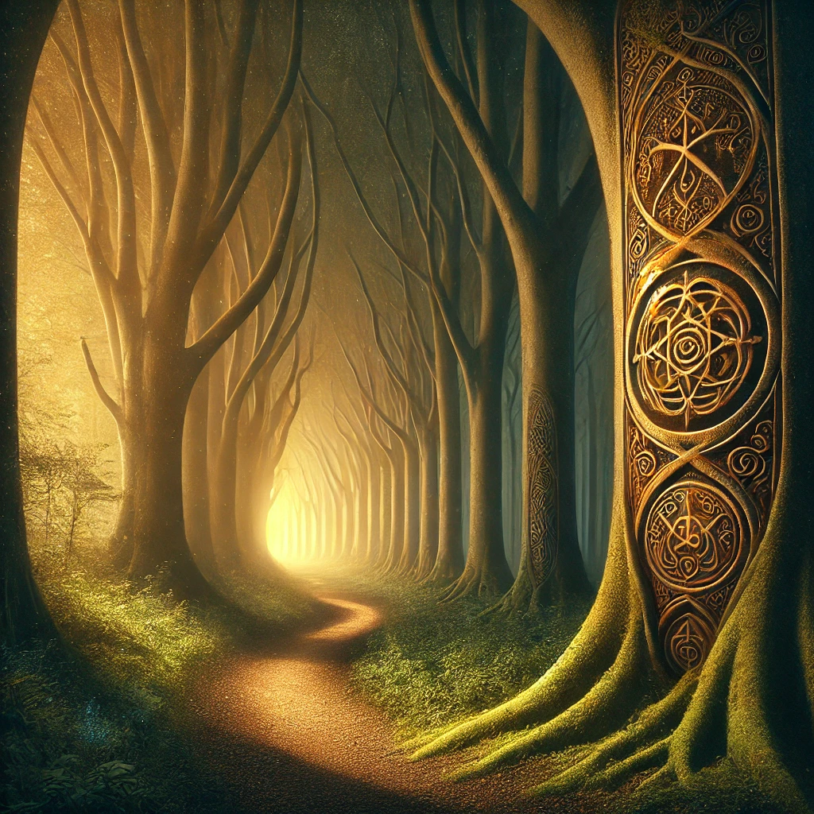

The left path curves gently into a tunnel of trees, their branches intertwined to form a natural archway. Golden light filters through the leaves, creating intricate patterns on the forest floor. The air is cooler here, carrying the faint scent of moss and wildflowers.
As you move deeper into the path, the light grows brighter, illuminating carvings etched into the trunks of ancient trees. The symbols pulse faintly, as though alive. A quiet, melodic hum fills the air, and you feel as though the path is guiding you toward something significant.
A voice resonates from the trees, soft yet commanding:
“The left path reveals what is hidden. To walk it is to uncover what you have forgotten. Are you ready to remember?”
The path ahead widens, leading toward a glowing clearing. You sense that your next step will determine how the journey unfolds.

What will you do?